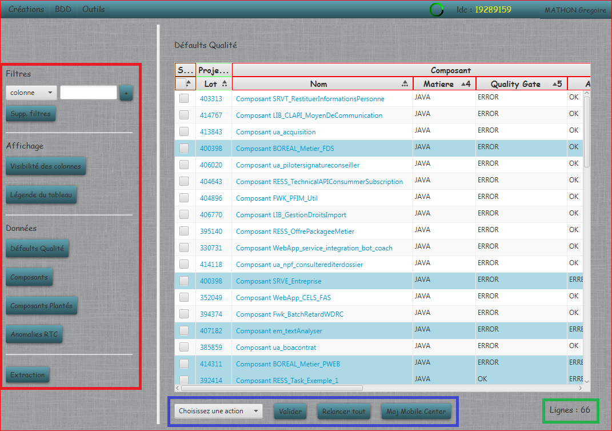
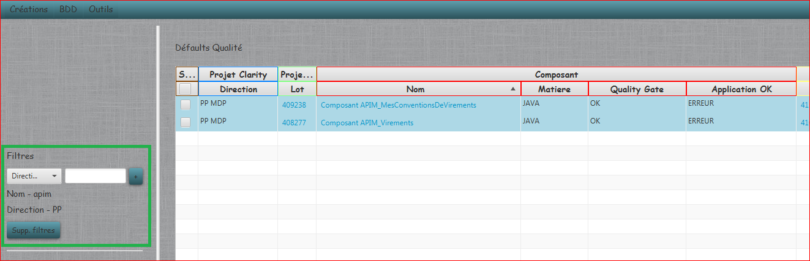
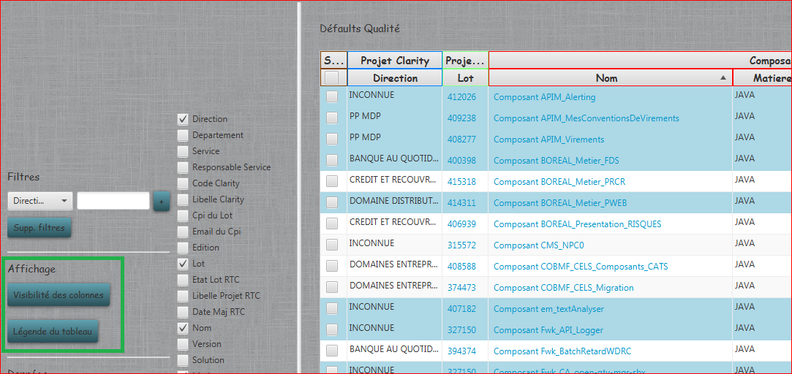
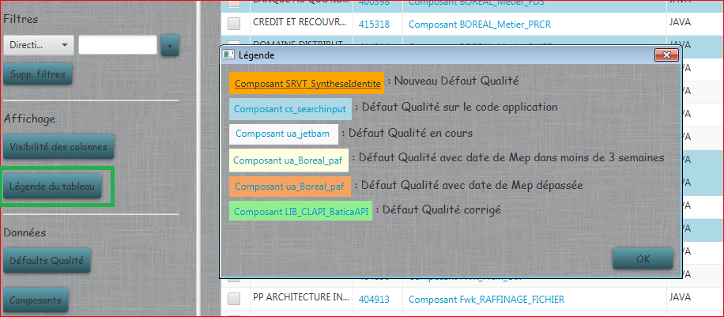
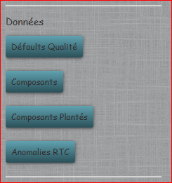
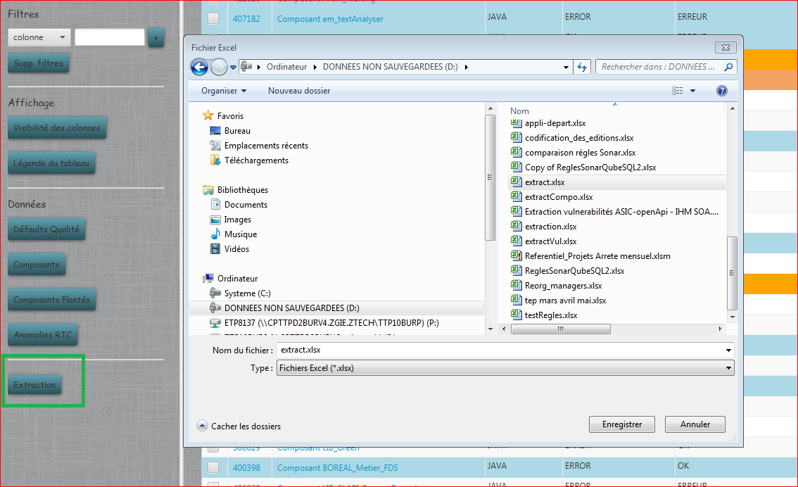

Base de Données
Permet d'afficher toutes les informations des différentes tables de la base de données. Toutes les pages utilisent un menu commun sur la gauche
ainsi qu'un affichage du nombre de lignes du tableau en bas à droite et un menu fonctionnel dédié en bas :

Le menu de gauche est séparé en plusieurs parties :
- Filtres : Permet de filtrer l'affichage du tableau selectionné selon chaque colonne. Le filtre sur plusieurs colonnes est possible.

Le bouton Suppr. filtres, permet de réinitialiser les filtres.
- Affichage : Gère l'affichage des colonnes et de la fénêtre
- Visibilité des colonnes : ouvre la liste de toutes les colonnes du tableau pour sélectionner celles à afficher.

- Légende du tableau : ouvre la fenêtre pour connaître la signification des couleurs dans chaque tableau.

- Données : Affiche le tableau correspondant aux données voulues

- Défaults Qualité : Affiche la liste des défauts qualité en cours et permet la gestion de ceux-ci.
- Composants : Affiche la liste des composants présent dans SonarQube, et permet de gérer la purge des doublons
- Composants Plantés : Affiche la liste des composants plantés dans SonarQube, pour permettre de les gérer ou de les purger au beosin.
- Anomalies RTC : Affiche et permet la gestion des anomalies RTC non liéées à un défaut qualimétrique.
- Extraction : Permet d'extraire les données d'un tableau dans un fichier Excel
Seules les colonnes affichées du tableau sont prises en comptes. Les données filtrées ne sont pas extraites.
